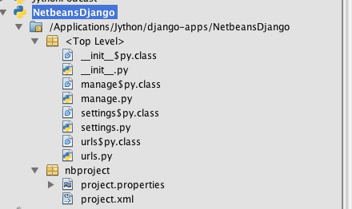

There are a plethora of examples for using Jython that can be found on the web. This appendix is a compilation of some of the most useful examples that we have found. Those that were chosen are focused on topics that are not widely covered elsewhere on the web.
Unless otherwise noted, each of these examples have been originally authored for working on versions of Jython prior to 2.5.x, but we have tested each of them using Jython 2.5.1 and they function as advertised.
wiki.python.org/jython/JythonMonthly/Articles/August2006/1
Are you still using the Jython print command to show your errors? How about in a production environment, are you using any formal logging? If not, you should be doing so, and the Apache log4j API makes it easy to do so. Many Java developers have grown to love the log4j API, and it is utilized throughout much of the community. That is great news for Jython developers because we’ve got direct access to Java libraries! There are many Python logging libraries, such as the standard logging module. However, sometimes if you are working with Java code it is nice to have the option to integrate with APIs such as log4j.
The most difficult part about using log4j with Jython is the setup. You must ensure that the log4j.jar archive resides somewhere within your Jython PATH (usually this entails setting the CLASSPATH to include necessary files). You then set up a properties file for use with log4j. Within the properties file, you can include appender information, where logs should reside, and much more. For more information, a good place to start is the log4j site manual: logging.apache.org/log4j/1.2/manual.html.
Listing B-1.
log4j.rootLogger=debug, stdout, R
log4j.appender.stdout=org.apache.log4j.ConsoleAppender
log4j.appender.stdout.layout=org.apache.log4j.PatternLayout
# Pattern to output the caller's file name and line number.
log4j.appender.stdout.layout.ConversionPattern=%5p [%t] (%F:%L) - %m%n
log4j.appender.R=org.apache.log4j.RollingFileAppender
log4j.appender.R.File=C:\\Jython\\testlog4j.log
log4j.appender.R.MaxFileSize=100KB
# Keep one backup file
log4j.appender.R.MaxBackupIndex=1
log4j.appender.R.layout=org.apache.log4j.PatternLayout
log4j.appender.R.layout.ConversionPattern=%p %t %c - %m%n
You are now ready to use log4j in your Jython application. As you can see, if you’ve ever used log4j with Java, it is pretty much the same.
First, you must import the log4j packages:
Listing B-2.
from org.apache.log4j import *
Second, you obtain a new logger for your class or module and set up a PropertyConfigurator:
Listing B-3.
self.logger = Logger.getLogger("myClass")
# Assume that the log4j properties resides within a folder named "utilities"
PropertyConfigurator.configure(sys.path[0] + "/utilities/log4j.properties")
Lastly, use log4j:
Listing B-4.
# Example module within the class:
def submitDocument(self, event):
try:
# Assume we perform some SQL here
except SQLException, ex:
self.logger.error("docPanel#submitDocument ERROR: %s" % (ex))
Your logging will now take place within the file you specified in the properties file for log4j.appender.R.File.
Posted to the Jython-users mailing list by Alfonso Reyes on October 14, 2007
wiki.python.org/jython/PoiExample
What follows are a few Apache Poi examples. Apache Poi is a set of Java APIs for creating and manipulating various file formats based on the Office Open XML standards (OOXML) and Microsoft’s OLE 2 Compound Document Format (OLE2). These APIs allow you to do things such as read and write spreadsheet files using Java. These examples require Apache Poi to be installed and on the classpath.
This is based on Java code at officewriter.softartisans.com/OfficeWriter-306.aspx and converted to Jython.
Listing B-5.
#jython poi example. from Jython mailing list
from java.io import FileOutputStream
from java.util import Date
from java.lang import System, Math
from org.apache.poi.hssf.usermodel import *
from org.apache.poi.hssf.util import HSSFColor
# Obtain the start time
startTime = System.currentTimeMillis()
# Create a new workbook, HSSFWorkbook is a high level representation of a workbook
wb = HSSFWorkbook()
# Create file if it doesn't exist
fileOut = FileOutputStream("POIOut2.xls")
# Create 3 sheets
sheet1 = wb.createSheet("Sheet1")
sheet2 = wb.createSheet("Sheet2")
sheet3 = wb.createSheet("Sheet3")
sheet3 = wb.createSheet("Sheet4")
# Create a header style
styleHeader = wb.createCellStyle()
fontHeader = wb.createFont()
fontHeader.setBoldweight(2)
fontHeader.setFontHeightInPoints(14)
fontHeader.setFontName("Arial")
styleHeader.setFont(fontHeader)
# Create a style used for the first column
style0 = wb.createCellStyle()
font0 = wb.createFont()
font0.setColor(HSSFColor.RED.index)
style0.setFont(font0)
# Create the style used for dates.
styleDates = wb.createCellStyle()
styleDates.setDataFormat(HSSFDataFormat.getBuiltinFormat("m/d/yy h:mm"))
# create the headers
rowHeader = sheet1.createRow(1)
# String value
cell0 = rowHeader.createCell(0)
cell0.setCellStyle(styleHeader)
cell0.setCellValue("Name")
# numbers
for i in range(0, 8):
cell = rowHeader.createCell((i + 1))
cell.setCellStyle(styleHeader)
cell.setCellValue("Data " + str( (i + 1)) )
# Date
cell10 = rowHeader.createCell(9)
cell10.setCellValue("Date")
cell10.setCellStyle(styleHeader)
# Populate the columns of the spreadsheet
for i in range(0, 100):
# create a new row
row = sheet1.createRow(i + 2)
for j in range(0, 10):
# create each cell
cell = row.createCell(j)
# Fill the first column with strings
if j == 0:
cell.setCellValue("Product " + str(i))
cell.setCellStyle(style0)
# Fill the next 8 columns with numbers.
elif j < 9:
cell.setCellValue( (Math.random() * 100))
# Fill the last column with dates.
else:
cell.setCellValue(Date())
cell.setCellStyle(styleDates)
# Summary row
rowSummary = sheet1.createRow(102)
sumStyle = wb.createCellStyle()
sumFont = wb.createFont()
sumFont.setBoldweight( 5)
sumFont.setFontHeightInPoints(12)
sumStyle.setFont(sumFont)
sumStyle.setFillPattern(HSSFCellStyle.FINE_DOTS)
sumStyle.setFillForegroundColor(HSSFColor.GREEN.index)
cellSum0 = rowSummary.createCell( 0)
cellSum0.setCellValue("TOTALS:")
cellSum0.setCellStyle(sumStyle)
# numbers
# B
cellB = rowSummary.createCell( 1)
cellB.setCellStyle(sumStyle)
cellB.setCellFormula("SUM(B3:B102)")
This Jython code will open and read an existing Excel file.
Listing B-6.
""" read.py
Read an existing Excel file (Book1.xls) and show it on the screen
"""
from org.apache.poi.hssf.usermodel import *
from java.io import FileInputStream
# Open an existing file and use HSSFWorkbook object to store it
file = "H:Book1.xls"
print file
fis = FileInputStream(file)
wb = HSSFWorkbook(fis)
# Obtain reference to the first sheet in the workbook
sheet = wb.getSheetAt(0)
# get No. of rows
rows = sheet.getPhysicalNumberOfRows()
print wb, sheet, rows
cols = 0 # No. of columns
tmp = 0
# This trick ensures that we obtain the data for future use even if it
# doesn't start from first few rows
for i in range(0, 10):
row = sheet.getRow(i)
if row:
tmp = sheet.getRow(i).getPhysicalNumberOfCells()
if tmp > cols:
cols = tmp
print cols
for r in range(0, rows):
row = sheet.getRow(r)
print r
if(row != None):
for c in range(0, cols):
cell = row.getCell(c)
if cell != None:
print cell
wb.close()
fis.close()
wiki.python.org/jython/JythonMonthly/Articles/October2007/1
RSS is an old technology now. It has been around for years. However, it is a technology that remains very useful for disseminating news and other information. The ROME project on java.net is helping to make parsing, generating, and publishing RSS and Atom feeds a breeze for any Java developer.
Because I am particularly fond of translating Java to Jython code, I’ve taken simple examples from the Project ROME Wiki and translated Java RSS reader and writer code into Jython. It is quite easy to do, and it only takes a few lines of code.
Keep in mind that you would still need to build a front-end viewer for such an RSS reader, but I think you will get the idea of how easy it can be just to parse a feed with Project ROME and Jython.
In order to use this example, you must obtain the ROME and JDOM jar files and place them into your CLASSPATH:
Listing B-7.
set CLASSPATH=C:\Jython\Jython2.2\rome-0.9.jar;%CLASSPATH%
set CLASSPATH=C:\Jython\Jython2.2\jdom.jar;%CLASSPATH%
OSX:
export CLASSPATH=/path/to/rome-0.9.jar:/path/to/jdom.jar
Parsing feeds is easy with ROME. Using ROME with Jython makes it even easier with the elegant Jython syntax.
We took the FeedReader example from the ROME site and translated it into Jython (see the following). You can copy and paste the code into your own FeedReader.py module and run it to parse feeds. However, the output is unformatted and ugly. Creating a good looking frontend is up to you.
Listing B-8.
########################################
# File: FeedReader.py
#
# This module can be used to parse an RSS feed
########################################
from java.net import URL
from java.io import InputStreamReader
from java.lang import Exception
from java.lang import Object
from com.sun.syndication.feed.synd import SyndFeed
from com.sun.syndication.io import SyndFeedInput
from com.sun.syndication.io import XmlReader
class FeedReader(Object):
def __init__(self, url=None):
self.inUrl = url
def readFeed(self):
#####################################
# If url passed in is blank, then use a default
#####################################
rssUrl = self.inUrl if self.inUrl else
"http://www.dzone.com/feed/frontpage/java/rss.xml"
#####################################
# Parse feed located at given URL
#####################################
try:
feedUrl = URL(rssUrl)
input = SyndFeedInput()
feed = input.build(XmlReader(feedUrl))
####################################
# Do something here with feed data
####################################
print(feed)
except Exception, e:
print 'An exception has occurred', e
if __name__== "__main__":
reader = FeedReader()
reader.readFeed()
print '****************Command Complete...RSS has been parsed*****************'
Similar to parsing a feed, writing a feed is also quite easy. When one creates a feed, it appears to be a bit more complex than parsing, but if you are familiar with XML and its general structure, then it should be relatively easy.
Creating a feed is a three step process. You must first create the feed element itself, then you must add individual feed entries, and lastly you must publish the XML.
Listing B-9.
########################################
# File: FeedWriter.py
#
# This module can be used to create an RSS feed
########################################
from com.sun.syndication.feed.synd import *
from com.sun.syndication.io import SyndFeedOutput
from java.io import FileWriter
from java.io import Writer
from java.text import DateFormat
from java.text import SimpleDateFormat
from java.util import ArrayList
from java.util import List
from java.lang import Object
class FeedWriter(Object):
####################################
# Set up the date format
####################################
def __init__(self, type, name):
self.DATE_PARSER = SimpleDateFormat('yyyy-MM-dd')
self.feedType = type
self.fileName = name
def writeFeed(self):
try:
################################
# Create the feed itself
################################
feed = SyndFeedImpl()
feed.feedType =self.feedType
feed.title = 'Sample Feed (created with ROME)'
feed.link = 'http://rome.dev.java.net'
feed.description = 'This feed has been created using ROME and Jython'
###############################
# Add entries to the feed
###############################
entries = ArrayList()
entry = SyndEntryImpl()
entry.title = 'ROME v1.0'
entry.link = 'http://wiki.java.net/bin/view/Javawsxml/Rome01'
entry.publishedDate = self.DATE_PARSER.parse("2004-06-08")
description = SyndContentImpl()
description.type = 'text/plain'
description.value = 'Initial Release of ROME'
entry.description = description
entries.add(entry)
entry = SyndEntryImpl()
entry.title = 'ROME v2.0'
entry.link = 'http://wiki.java.net/bin/view/Javawsxml/Rome02'
entry.publishedDate = self.DATE_PARSER.parse("2004-06-16")
description = SyndContentImpl()
description.type = 'text/plain'
description.value = 'Bug fixes, minor API changes and some new features'
entry.description = description
entries.add(entry)
entry = SyndEntryImpl()
entry.title = 'ROME v3.0'
entry.link = 'http://wiki.java.net/bin/view/Javawsxml/Rome03'
entry.publishedDate = self.DATE_PARSER.parse("2004-07-27")
description = SyndContentImpl()
description.type = 'text/plain'
description.value = '<p>More Bug fixes, mor API changes, some new features and some Unit testing</p>'
entry.description = description
entries.add(entry)
feed.entries = entries
###############################
# Publish the XML
###############################
writer = FileWriter(self.fileName)
output = SyndFeedOutput()
output.output(feed,writer)
writer.close()
print('The feed has been written to the file')
except Exception, e:
print 'There has been an exception raised',e
if __name__== "__main__":
####################################
# You must change his file location
# if not using Windows environment
####################################
writer = FeedWriter('rss_2.0','C:\\TEMP\\testRss.xml')
writer.writeFeed()
print '****************Command Complete...RSS XML has been created*****************'
After you have created the XML, you’ll obviously need to place it on a web server somewhere so that others can use your feed. The FeedWriter.py module would probably be one module among many in an application for creating and managing RSS Feeds, but you get the idea.
As you can see, using the ROME library to work with RSS feeds is quite easy. Using the ROME library within a Jython application is straightforward. As you have now seen how easy it is to create and parse feeds, you can apply these technologies to a more complete RSS management application if you’d like. The world of RSS communication is at your fingertips!
wiki.python.org/jython/JythonMonthly/Articles/January2007/3
During October and November of 2006, there was a thread in the Jython-users group called “adding JARs to sys.path.” More accurately, the objective was to add JARs to the sys.path at runtime. Several people asked the question, “Why would you want to do that?” Well there are at least two good reasons. The first is if you want to distribute a Jython or Java package that includes non-standard Jars in it. Perhaps you want to make life easier for the target user and not demand that they know how to set environment variables. A second even more compelling reason is when there is no normal user account to provide environment variables.
“What?” you ask. Well, in my case I came upon this problem in the following way. I am working on an open source IHE Image Archive Actor and needed a web interface. I’m using AJAX on the client side to route database calls through CGI to a Jython-JDBC enabled API. Testing the Jython-JDBC API from the command line worked fine; I had the PostgreSQL driver in my CLASSPATH. But when called via the web interface, I got “zxJDBC error, PostgreSQL driver not found” errors. Why? Because APACHE was calling the API and APACHE is not a normal account with environment variables.
The Jython-users thread had many suggestions, but none were found to work. Chapter 11 of O’Reilly’s Jython Essentials mentions under “System and File Modules” that “to load a class at runtime, one also needs an appropriate class loader.” Of course, no mention is made beyond that. After a while, it occurred to me that perhaps someone in the Java world had found a similar problem and had solved it. Then all that would be required is to translate that solution. And that is exactly what happened.
For brevity, I will not repeat the original Java code here. The following shows how I call the Jython class (note that one can use either addFile or addURL depending on whether the Jar is on a locally accessible file system or remote server).
Listing B-10.
import sys
from com.ziclix.python.sql import zxJDBC
d,u,p,v = "jdbc:postgresql://localhost/img_arc2","postgres","","org.postgresql.Driver"
try :
# if called from command line with .login CLASSPATH setup right,this works
db = zxJDBC.connect(d, u, p, v)
except:
# if called from Apache or account where the .login has not set CLASSPATH
# need to use run-time CLASSPATH Hacker
try :
jarLoad = classPathHacker()
a = jarLoad.addFile("/usr/share/java/postgresql-jdbc3.jar")
db = zxJDBC.connect(d, u, p, v)
except :
sys.exit ("still failed \n%s" % (sys.exc_info()))
And here is the class “classPathHacker” which is what the original author called his solution. In fact, you can simply Google on “classPathHacker” to find the Java solution.
Listing B-11.
class classPathHacker :
##########################################################
# from http://forum.java.sun.com/thread.jspa?threadID=300557
#
# Author: SG Langer Jan 2007 translated the above Java to this
# Jython class
# Purpose: Allow runtime additions of new Class/jars either from
# local files or URL
######################################################
import java.lang.reflect.Method
import java.io.File
import java.net.URL
import java.net.URLClassLoader
import jarray
def addFile (self, s):
#############################################
# Purpose: If adding a file/jar call this first
# with s = path_to_jar
#############################################
# make a URL out of 's'
f = self.java.io.File (s)
u = f.toURL ()
a = self.addURL (u)
return a
def addURL (self, u):
##################################
# Purpose: Call this with u= URL for
# the new Class/jar to be loaded
#################################
parameters = self.jarray.array([self.java.net.URL], self.java.lang.Class)
sysloader = self.java.lang.ClassLoader.getSystemClassLoader()
sysclass = self.java.net.URLClassLoader
method = sysclass.getDeclaredMethod("addURL", parameters)
a = method.setAccessible(1)
jar_a = self.jarray.array([u], self.java.lang.Object)
b = method.invoke(sysloader, jar_a)
return u
That’s it. Depressingly short for what it does, but then that’s more proof of the power of this language. I hope you find this as powerful and useful as I have. It allows the possibility of distributing Jython packages with all their file dependencies within the installation directory, freeing the user or developer from the need to alter user environment variables, which should lead to more programmer control and thus higher reliability.
The following Ant example works with Jython version 2.2.1 and earlier, only due to the necessary jythonc usage. jythonc is no longer distributed with Jython as of 2.5.0. This example could be rewritten using object factories to work with current versions of Jython.
fishandcross.com/articles/AntTasksWithJython.html
Ant is the current tool of choice for Java builds. This is so partially because it was the first Java-oriented build tool on the scene and because the reigning champion None was getting long in the tooth and had fallen out of favor with the Java crowd. But Java builds are getting more and more difficult, and these days there is general dissatisfaction with Ant. Note particularly Bruce Eckel’s comments and Martin Fowler’s further comments. The comments to Bruce Eckel’s posting show similar frustrations. Fowler summarizes the issues like this:
Simple builds are easy to express as a series of tasks and dependencies. For such builds the facilities of Ant/Make work well. But more complex builds require conditional logic, and that requires more general programming language constructs. And that’s where Ant/Make fall down. Ken Arnold’s article, “The Sum of Ant,” led me to Jonathon Simon’s article, “Scripting with Jython Instead of XML,” and got me thinking about extending Ant with Jython. Simon’s article presents a technique to drive Ant tasks, testing, etc., all from Jython. What I am presenting is a technique to embed Jython scripts into Ant which is admittedly backwards from Simon’s approach, but hopefully adds power and flexibility to Ant builds.
My experience working with large builds automated through Ant is not dissimilar to what Fowler is referring to. Eventually, builds need to do either a lot of odd conditional logic in the xml file and ends up burying the logic in scripts, or in a large number of custom tasks written in Java. This is particularly the case if your builds include non-Java source that Ant just isn’t smart about building. In one case in particular, the set of custom tasks for the build is really its own system with maintenance and staff costs that are quite substantial. A large number of scripts can quickly become a problem for enterprise build systems as they are difficult to standardize and cross platform issues are always looming.
Spille, in his article, “ANT’s Finally a Real Build Tool,” demonstrates that the new <import> tag now allows build managers to write truly modular and standardized build systems based on Ant! As Ant grows up, more and more of these issues will get resolved.
always had was the ability to easily call scripts and command utilities.
This is something that is definitely possible with Ant script/exec tasks, but it feels very un-Java. What we need is an elegant way to add ad-hoc behavior to Ant builds.
What I think can do the job is to take a more considered approach to using a scripting tool inside an Ant build. Rather than just create a mishmash of scripts that are called from exec or script tasks, I suggest that we write custom Ant build tasks in a high level scripting language. In this case, Jython.
Writing custom Ant tasks allows a build manager to leverage the huge number of already written tasks in their builds, while writing what naturally belongs in a more flexible tool in custom Ant tasks that can themselves then be reused, and are as cross-platform as Java itself, and wholly integrated into Ant. Because Ant uses Java introspection to determine the capabilities of custom tasks, Jython is the perfect tool to accomplish this. All we need to do is ensure that the methods that Ant expects are present in the Jython classes and Ant won’t notice the difference.
What we will implement is the perennial SimpleTask which is nothing more than a “Hello World” for ant. It should be sufficient to demonstrate the key steps.
To compile the Jython source you will need to add the ant.jar file to your classpath. This will make it available to Jython to extend which we’ll do in the following. To do that, define your classpath:
Listing B-12.
<DOS>
set CLASSPATH=c:\path\to\ant\lib\ant.jar;%CLASSPATH%
<UNIX>
export CLASSPATH=/path/to/ant/lib/ant.jar:$CLASSPATH
The following is a very simple Ant task written in Jython. Save this as SimpleTask.py.
Listing B-13.
from org.apache.tools.ant import Task
class SimpleTask(Task):
message = ""
def execute(self):
"""@sig public void execute()"""
Task.log(self, "Message: " + self.message)
def setMessage(self, aMessage):
"""@sig public void setMessage(java.lang.String str)"""
self.message = aMessage
This simple Jython class extends the Ant Task superclass. For each of the properties we want to support for this task, we write a setXXXXX method where XXXXX corresponds to the property we are going to set in the Ant build file. Ant creates an object from the class, calls the setXXXXX methods to set up the properties and then calls the execute method (actually, it calls the perform method on the Task superclass which calls the execute() method). So let’s try it out.
To build this into a jar file for use in Ant, do the following:
Listing B-14.
jythonc -a -c -d -j myTasks.jar SimpleTask.py
This will produce a jar file myTasks.jar and include the Jython core support classes in the jar. Copy this jar file into your Ant installation’s lib directory. In my case I copy it to c:toolsantlib.
Once you’ve got that working, here is a very simple Ant test build file to test your custom Jython task.
Listing B-15.
<project name="ant jython demo" default="testit" basedir=".">
<!-- Define the tasks we are building -->
<taskdef name="Simple" classname="SimpleTask" />
<!-- Test Case starts here -->
<target name="testit">
<Simple message="Hello World!" />
</target>
</project>
All right, that is a pretty simple task. What else can we do? Well, the sky is the limit really. Here is an example of a task container. In this case, the task holds references to a set of other tasks (SimpleTask tasks in this case):
Listing B-16.
from org.apache.tools.ant import Task
from org.apache.tools.ant import TaskContainer
class SimpleContainer(TaskContainer):
subtasks = []
def execute(self):
"""@sig public void execute()"""
for task in self.subtasks:
task.perform()
def createSimpleTask(self):
"""@sig public java.lang.Object createSimpleTask()"""
task = SimpleTask()
self.subtasks.append(task)
return task
class SimpleTask(Task):
message = ""
def execute(self):
"""@sig public void execute()"""
Task.log(self, "Message: " + self.message)
def setMessage(self, aMessage):
"""@sig public void setMessage(java.lang.String str)"""
self.message = aMessage
The SimpleContainer extends the TaskContainer Java class. Its createSimpleTask method creates a SimpleTask object and returns it to Ant so its properties can be set. Then when all the tasks have been added to the container and their properties have been set, the execute method on the SimpleContainer class is called, which in turn calls the perform method on each of the contained tasks. Note that the perform method is inherited from the Task superclass and it in turn calls the execute method which we have overridden.
Here is an Ant build file to test your custom jython task container. Note that you don’t need to include a task definition for the contained SimpleTask unless you want to use it directly. The createSimpleTask factory method does it for you.
Listing B-17.
<project name="ant jython demo" default="testit" basedir=".">
<!-- Define the tasks we are building -->
<taskdef name="Container" classname="SimpleContainer" />
<!-- Test Case starts here -->
<target name="testit">
<Container>
<SimpleTask message="hello" />
<SimpleTask message="there" />
</Container>
</target>
</project>
As I learned this technique, I discovered that the magic doc strings are really necessary to force Jython to put the right methods in the generated Java classes. For example:
Listing B-18.
"""@sig public void execute()"""
This is primarily due to Ant’s introspection that looks for those specific methods and signatures. These docstrings are required or Ant won’t recognize the classes as Ant tasks.
I also learned that for Jython to extend a Java class, it must specifically import the Java classes using this syntax:
Listing B-19.
from org.apache.tools.ant import Task
from org.apache.tools.ant import TaskContainer
class MyTask(Task):
...
You can not use this syntax:
import org.apache.tools.ant.Task
import org.apache.tools.ant.TaskContainer
class MyTask(org.apache.tools.ant.Task):
...
This is because, for some reason, Jython doesn’t figure out that MyTask is extending this Java class and so doesn’t generate the right Java wrapper classes. You will know that this working right when you see output like the following when you run the jythonc compiler:
Listing B-20.
processing SimpleTask
Required packages:
org.apache.tools.ant
Creating adapters:
Creating .java files:
SimpleTask module
SimpleTask extends org.apache.tools.ant.Task <<<
Here is a quick summary then of why this is a helpful technique.
First, it is a lot faster to write Ant tasks that integrate with third party tools and systems using a glue language; Jython is excellent at that. That is really my prime motivation for trying out this technique.
Secondly, Jython has an advantage over other scripting languages (which could be run using Ant’s exec or script tasks), because it can be tightly integrated with Ant (use the same logging methods, same settings, and so on). This makes it easier to build a standardized build environment.
Finally, and related to the last point, Jython can be compiled to Java byte code, which runs like any Java class file. This means you don’t have to have Jython installed to use the custom tasks and your custom task, if written well, can run on a wide variety of platforms.
I think this is a reasonable way to add flexibility and additional integration points to Ant builds.
It is not a very straightforward task if you wish to develop Jython web applications utilizing a standard framework from within Netbeans. However, with a little extra configuration and some manual procedures, it is easy enough to do. In this section I will demonstrate how we can make use of Netbeans for developing a Django application without using any Netbeans plug-ins above and beyond the standard Python support. This section will cover the setup for a Django project within Netbeans, but it will not cover any Django features. For complete details on using Django with Jython, please refer to Chapter 14. You will see that Jython applications can be run, tested, and verified from within the IDE with very little work. Because there are a few steps in this section that may be more difficult to visualize, please use the provided screen shots to follow along if you are not using Netbeans while reading this text.
In order to effectively create and maintain a Django web site, you need to have the ability to run commands against manage.py. Unfortunately, there is no built-in way to easily do this within the IDE, so we have to use the terminal or command line along with the IDE to accomplish things. Once we create the project and set it up within Netbeans, we can work with developing it from within Netbeans and you can also set up the project Run feature to startup the Django server.
Assuming that you already have Django setup and configured along with the Django-Jython project on your machine, the first step in using a Django project from within Netbeans is actually creating the project. If you are working with a Django project that has already been created then you can skip this step, but if not then you will need to go to the terminal or command-line and create the project using django-admin.py. For the purposes of this tutorial, let’s call our Django site NetbeansDjango.
Listing B-21.
django-admin.py startproject NetbeansDjango
Now we should have the default Django site setup and we’re ready to bring it into Netbeans. To do this, start a new Python project within Netbeans using the Python Project with Existing Sources option, and be sure to set your Python Platform to Jython 2.5.1 so we are using Jython. After hitting the Next button, we have the ability to add sources to our project. Hit the Add button and choose the main project folder, so in our case select the NetbeansDjango folder. This will add our project root as the source root for our application. In turn, it adds our Django setup files such as manage.py to our project. After doing so your project should look something like Figure B-1.

**Figure B-1. **Adding Django files to your project
In this next step, we will configure the Netbeans project Run option so that it starts up the Django web server for us. To do so, right-click (Cntrl+Click) on the newly created project and go to Properties. From there, choose the Python option in the left-hand menu and add the Django directory (containing the bin, conf, contrib, core, and so on files) to your path. For this tutorial we will also make use of the PostgreSQL database, so you’ll want to also add the postgresql.jar to your Python path. Next, select the Run option from the left-hand menu and add manage.py as the main module, and add runserver as the application argument. This will essentially hook up the Run project option to the Django manage.py such that it will invoke the Django web server to start up. At this point, we are ready to begin developing our Django application. So with a little minor setup and some use of the terminal or command-line we are able to easily use Netbeans for developing Django projects. There are a few minor inconsistencies with this process; however, note that there is no real integrated way to turn off the webserver as yet so once it is started we can either leave it running or stop it via your system process manager. Otherwise you can hook up different options to the Netbeans Run project command such as syncdb by simply choosing a different application argument in the project properties. If you use this methodology, then you can simply start and stop the Django web server via the terminal as normal. I have also found that after running the Django web server you will have to manually delete the settings$.py.class file that is generated before you can run the server again or else it will complain. In future versions of Netbeans, it is expected that Django functionality will be built into the Python support. We will have to take another look at using Django from within Netbeans at that time. For now, this procedure works and it does a fine job. You can make use of similar procedures to use other web frameworks such as Pylons from within Netbeans.